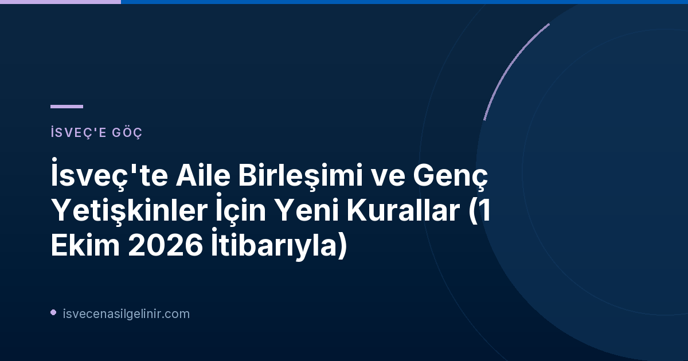

İsveç'te Aile Birleşimi Kuralları Neden Değişti?
İsveç Hükümeti'nin uzun süredir üzerinde çalıştığı ve Riksdagen'in (İsveç Parlamentosu) onayladığı yeni yasalar, 1 Ekim 2026 tarihinde yürürlüğe girdi. Bu değişikliklerin temel amacı, aile birleşimi süreçlerini daha düzenli hale getirmek ve ülkenin göç politikalarını güncel ihtiyaçlara göre şekillendirmektir. Yeni düzenlemeler hem İsveç'e bir aile üyesiyle taşınmak isteyenleri hem de halihazırda aile birleşimi oturma izniyle İsveç'te yaşayan ve iznini uzatmak isteyen kişileri doğrudan etkilemektedir.
Genç Yetişkinler İçin Yeni Fırsatlar: İsveç İçinden Oturma İzni Başvurusu
Yeni yasaların getirdiği en önemli yeniliklerden biri, daha önce aile birleşimi nedeniyle oturma izni bulunan ancak 18 yaşını doldurduktan sonra bu izinleri sona erme riskiyle karşı karşıya kalan genç yetişkinlere yönelik düzenlemelerdir. Migrationsverket, hükümetin yeni yasa önerisini takiben Mart ayında bu tür davalardaki olumsuz kararları askıya almıştı. Şimdi ise, askıya alınan tüm başvuruların yeniden değerlendirilmesine başlandı.
Migrationsverket yetkilisi Ann-Kari Olsson'un belirttiği gibi, amaç bu genç yetişkinlerin oturma izni başvurusu yapma ve başvurularının değerlendirilme fırsatına sahip olmalarını sağlamaktır. Yeni kurallar, 18 yaşını doldurmuş olsalar bile ebeveynleriyle olan bağları nedeniyle oturma izni uzatmak isteyen genç yetişkinlere bu imkanı tanımaktadır. Hatta geçiş sürecinde, halihazırda sınır dışı kararı almış bazı genç yetişkinler de bu kapsamda değerlendirilebilecektir.
Geçici Başvuru Hakkı: Başka Bir Gerekçeyle İsveç İçinden Oturma İzni
Yeni düzenlemelerle birlikte, Aralık 2027'ye kadar geçerli olmak üzere geçici bir uygulama da başlatılmıştır. Bu uygulama, genç yetişkinlerin İsveç'i terk etmelerine gerek kalmadan, başka bir gerekçeyle (örneğin eğitim veya iş) oturma izni başvurusunda bulunmalarına olanak tanımaktadır. Ancak Ann-Kari Olsson, bu geçici hakkın, başvuru sahibinin yeni izin türünün koşullarını yine de karşılaması gerektiğini vurgulamaktadır. Yani, bu özel bir koşul indirimi değil, sadece başvurunun İsveç içinden yapılabilme imkanıdır.
Aile Birleşimi İçin Yeni ve Sıkılaşan Şartlar
Yeni yasalar, aile birleşimi başvurularında bazı koşulları da sıkılaştırmıştır. Bu sıkılaştırmalar, İsveç'teki aile üyesinin (anknytningsperson) ve başvuranın durumunu yakından ilgilendirmektedir.
İki Yıllık İsveç'te İkamet Şartı (Vistelsetid)
Yeni düzenlemeye göre, süreli oturma iznine sahip olan ve aile birleşimi için referans olan kişi, aile üyesinin başvurusu sırasında İsveç'te en az iki yıl ikamet etmiş olmalıdır. Bu şart, aile bağının sağlamlığını ve İsveç'teki yaşamla entegrasyonu sağlama amacı taşımaktadır.
İki Yıllık İkamet Şartından Muafiyetler
Aşağıdaki durumlarda iki yıllık ikamet şartı aranmayacaktır:
- Çalışma iznine sahip olanlar
- Araştırmacılar ve doktora öğrencileri
- AB Mavi Kart ve BİT (ICT) iznine sahip olanlar
- Refakatsiz çocuklar ve ebeveynleri
- Bazı özel durumlarda mülteciler
Bu gruplar için farklı kurallar uygulanmaya devam edecektir. İsveç'teki yasal süreçler ve vatandaşlık testi hakkında detaylı bilgiye ihtiyacınız varsa, sverigemedborgarskapsprov.com size rehberlik edebilir.
Yükselen Geçim Desteği Şartı (Försörjningskrav)
Aile birleşimi başvurularında aranan geçim desteği şartı da sıkılaştırılmıştır. Bu, referans olan kişinin konut masrafları ödendikten sonra elinde kalması gereken miktarın artırıldığı anlamına gelmektedir. Amaç, İsveç'e gelen aile üyelerinin ülkenin sosyal yardım sistemine yük olmadan kendi geçimlerini sağlayabilmesidir.
Geçim desteği şartı, yalnızca ilk başvurularda değil, aynı zamanda aile birleşimi oturma izninin uzatılması başvurularında da geçerli olacaktır. Ancak bu durumlarda, normal şartlar altında, aile üyesinin (başvuranın) gelirleri de bu gerekliliğin karşılanmasında dikkate alınabilecektir.
Migrationsverket'in Hazırlıkları ve Bilgilendirme
Migrationsverket, yeni kuralların yürürlüğe girmesi öncesinde kapsamlı bir hazırlık süreci yürüttüğünü belirtmiştir. Bu hazırlıklar, yeni yasaların başvuruların değerlendirilmesi üzerindeki etkilerinin analiz edilmesi, rutinlerin ve çalışma yöntemlerinin uyarlanması, destekleyici belgelerin güncellenmesi ve ilgili tarafların bilgilendirilmesini içermektedir.
Kurum, farklı durumlar ve oturma izni türlerine göre yeni kuralların sizin için ne anlama geldiği hakkında daha fazla bilgi edinmek için kendi web sitelerindeki ilgili sayfalara yönlendirme yapmaktadır:
- Genç yetişkinler, İsveç'e birine taşınmak isteyenler veya izinlerini uzatmak isteyenler için: Nya regler för anhöriginvandring och unga vuxna från 1 oktober
- Çalışma iznine sahip çalışanların aile üyeleri için: Nya regler för medföljande familjemedlemmar till arbetstagare
- Başka bir AB ülkesinde uzun süreli ikamet edenlerin aile üyeleri için: Nya regler för familj till varaktigt bosatta i annat EU-land
- Öğrenci aile üyeleri için: Nya regler för medfoljande familjemedlemmar till studenter
Referanslar
- Migrationsverket Resmi Duyurusu: Nya regler för unga vuxna och för den som vill flytta till anhörig i Sverige
- İsveç Vatandaşlık Testi ve Göçmenlik Rehberliği: sverigemedborgarskapsprov.com
İsveç Göçmenlik Süreçlerinizde Yanınızdayız!
İsveç'e taşınma, aile birleşimi veya vatandaşlık süreçleri hakkında en güncel bilgilere ve uzman rehberliğine ihtiyacınız varsa, doğru yerdesiniz. Detaylı danışmanlık hizmetlerimizle hayallerinize ulaşmanıza yardımcı oluyoruz.